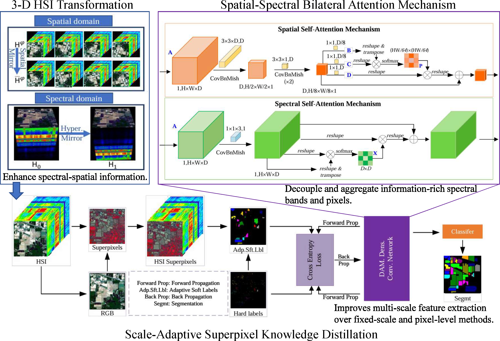
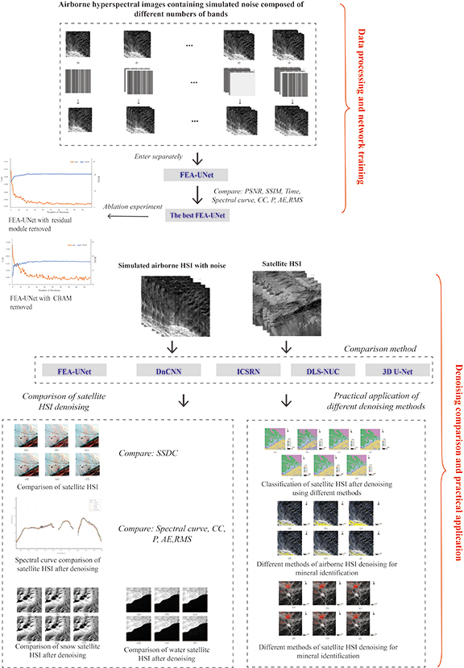
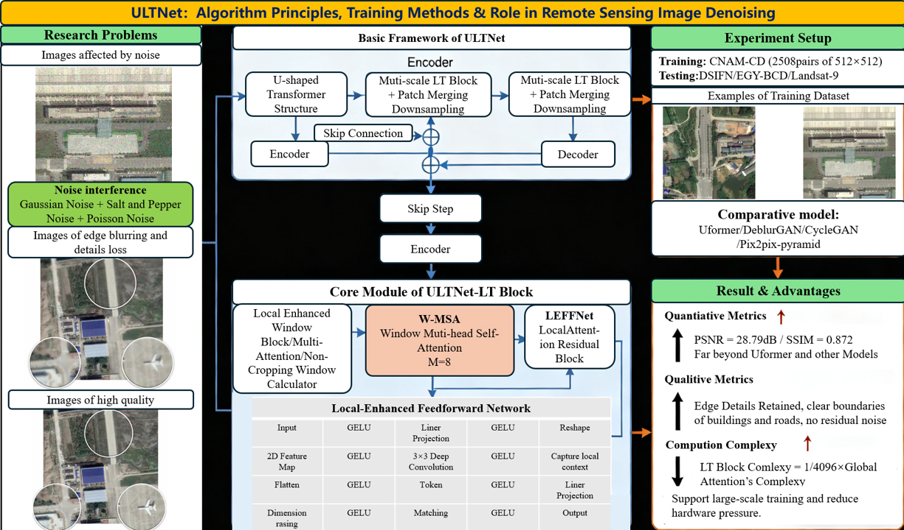
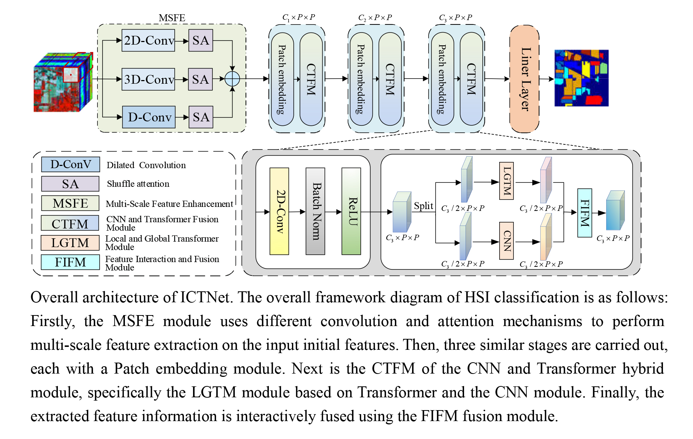
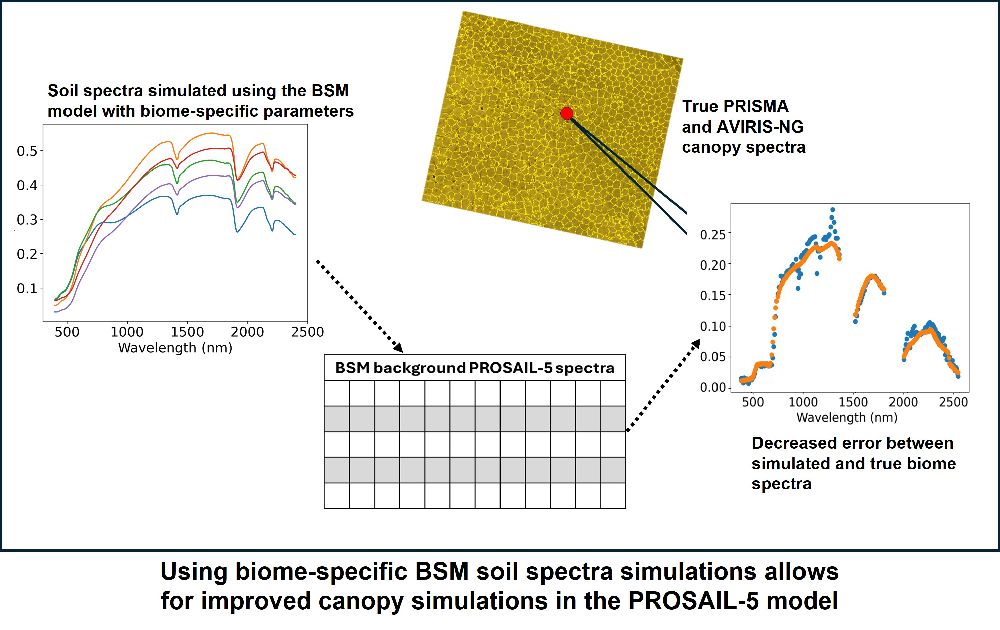

Pages: pp. 683-696
Authors: Dong, Shuang; Li, Ying; Xie, Ming; Han, Tingting;
Abstract:
Read more...
Hyperspectral image (HSI) classification is a critical area in remote sensing with broad applications in geoscience. While deep learning methods have gained popularity for HSI classification, their potential remains underexplored due to limited labeled data. To address this, we propose a scale-adaptive knowledge distillation with superpixel framework that trains deep neural networks using unlabeled samples. The proposed framework incorporates three core components: (1) scale-adaptive superpixel knowledge distillation, (2) bilateral spatial–spectral attention mechanisms, and (3) three-dimensional (3D) hyperspectral data transformation. The distillation module implements self-supervised learning through dynamically generated soft labels based on cross-dimensional similarity metrics. The workflow proceeds through three stages: Initially, spatial–spectral joint distance metrics evaluate the affinity between unlabeled superpixels and target classes. Subsequently, these measurements inform probabilistic soft label assignments for each superpixel cluster. Finally, an end-to-end trainable dense convolutional network with dual attention pathways is refined by optimizing the divergence between the adaptive label distributions and network predictions. Additionally, 3D transformations, including spectral and spatial rotations of the HSI cube, are applied to maximize the utility of labeled data. Experiments on three public HSI data sets demonstrate that the proposed method achieves competitive accuracy and efficiency compared to existing approaches. The implementation code is available at https://github.com/San-dow/Awnsome-SAKDS_HSI.

Pages: pp. 697-712
Authors: Gao, Ruoheng; Dong, Xinfeng; Li, Na; Cui, Jing; Li, Tongtong; Wu, Jingkai; Bai, Wei; Zhang, Rui;
Abstract:
Read more...
The ZY1-02D satellite, equipped with China’s first civilian hyperspectral payload, provides valuable data for remote sensing applications. However, its hyperspectral images (HSIs) are often degraded by stripe noise, significantly limiting their practical utility. Traditional denoising methods are challenged by the complex spatial and spectral characteristics inherent to HSIs, frequently resulting in compromised image quality. Fusion residual block and attention mechanism U-Net (FEA–U-Net), a novel three-dimensional destriping network, is proposed to eliminate stripe noise in hyperspectral imagery. This framework innovatively integrates cross-dimensional attention mechanisms with deep residual learning. A composite loss function combining mean squared error and spectral angle was designed to ensure spectral fidelity before and after denoising. Through systematic evaluation across varying input band numbers, the optimal network configuration was determined. When evaluated on ZY1-02D data sets, state-of-the-art performance is achieved by FEA–U-Net, demonstrating superior geological information preservation and computational efficiency. Compared with existing methods, the highest reported denoising performance was observed, with peak signal-to-noise ratio and structural similarity index reaching 48.1681 and 0.9998, respectively. Spectral curve integrity is effectively preserved, enhancing lithological classification and mineral identification accuracy in hyperspectral imagery.

Pages: pp. 713-720
Authors: Zheng, Zezhong; Huang, Jingfan; Yu, Shuang; Yu, Zhenlu;
Abstract:
Read more...
In the application of remote sensing data, the data obtained by a single sensor often cannot meet the actual needs, because the information contained in these data is often limited. Data fusion can improve the availability of these data, but it also brings the problem of information redundancy. In this paper, a whole set of multi-source remote sensing image-processing frameworks was constructed first and aimed at the problem of neighborhood selection in an isometric mapping (ISOMAP) algorithm; an improved ISOMAP algorithm based on the L1 norm (a sparse optimization technique that minimizes absolute value sums) was proposed to mine the inherent low-dimensional structure of multi-source remote sensing data and reduce the dimension of the data. In this paper, the traditional manifold learning algorithm is improved by developing a version of ISOMAP based on the L1 norm (L1-ISOMAP) for dimensionality reduction tasks. After dimensionality reduction, the support vector machine (SVM) and random forest (RF) are used to classify the dimensionality reduction data. The experimental results demonstrate that compared with other dimensionality reduction methods such as Pairwise Controlled Manifold Approximation Projection (PaCMAP), Uniform Manifold Approximation and Projection (UMAP), traditional ISOMAP, and other improved ISOMAP variants (achieving 96.90% overall accuracy with SVM and 98.69% with RF, with kappa coefficients of 0.96 and 0.98, respectively), our L1-ISOMAP achieves superior overall classification accuracy and exhibits stronger robustness in processing multi-source remote sensing data.

Pages: pp. 721-727
Authors: Zhang, Shaohua; Li, Wenyun; Bian, Hefang;
Abstract:
Read more...
Remote sensing images serve as indispensable and pivotal carriers in diverse fields, including natural resource management, ecological environment protection, and urban–rural construction planning. Acquiring high-quality remote sensing images is particularly critical for practical applications. However, limitations such as adverse weather conditions and equipment constraints often hinder the acquisition of high-quality data. To tackle this challenge, this paper proposes a U-shaped Transformer network architecture—incorporating locally enhanced windows and denoted as ULTNet—for restoring low-quality remote sensing images to high-quality ones. The network leverages a locally enhanced transformer (LT) block, equipped with locally enhanced windows, for attention extraction. This block applies a local self-attention mechanism within nonoverlapping spatial windows, effectively reducing computational complexity while capturing richer global dependencies to enable end-to-end remote sensing image restoration. Both quantitative and qualitative analyses demonstrate that the proposed method exhibits superior restoration performance and strong generalization capabilities.

Pages: pp. 729–738
Authors: An, Jinliang; Wang, Muzi; Dai, Longlong; Zhang, Weidong;
Abstract:
Read more...
The classification of a hyperspectral image (HSI) plays a critical role and serves as the foundation for many related applications. The combination of convolutional neural networks (CNNs) and transformers has shown promising performance in HSI classification by using the advantages of the two networks. However, existing hybrid models often offer limited feature interaction and fusion between the two branches. Here, a novel interactive convolution and transformer network (ICTNet) for HSI classification is proposed. Specifically, raw HSI is first fed into a multi-scale feature-enhancement module, where convolution operations with varying kernel sizes are used to extract multi-scale features, and shuffle attention is used to further enhance feature representation. Enhanced features are then processed by a dual-branch CNN and transformer fusion module to leverage local information and long-range dependencies. Additionally, the feature interaction and fusion module is proposed to facilitate dynamic interaction and fusion of features during extraction and propagation between the two branches, enhancing the diversity and interactivity of the features. Extensive experimental results on three real HSI data sets demonstrate that the proposed ICTNet outperforms state-of-the-art HSI classification methods.

Research Articles Open Access
Pages: pp. 739–745
Authors: Bonnet, Wessel; Cho, Moses Azong; Chirwa, Paxie W.; Masemola, Cecilia;
Abstract:
Read more...
The mapping and modeling of canopies is important for the understanding, monitoring, and management of vegetation systems. To effectively model or simulate canopy spectra at the hyperspectral level, background soil spectra must first be simulated accurately. Spectrometer data simulation such as this will become increasingly relevant as newer imaging spectroscopy missions such as PRISMA and AVIRIS-NG start to produce more data sets. In this study, the brightness–shape–moisture (BSM) radiative transfer model (RTM) with localized parameter distributions was used in conjunction with the PROSAIL-5 RTM to simulate canopy spectra for different biomes in the semiarid regions of Southern Africa as captured with PRISMA or AVIRIS-NG sensors. It is hypothesized that a PROSAIL-5 RTM with biome-specific BSM parameters can more accurately simulate PRISMA and AVIRIS-NG spectra than a PROSAIL-5 model simulated with the default soil spectrum, as represented by lower relative root mean square error (RRMSE) values against actual spectra. It is demonstrated that the PRISMA and AVIRIS-NG canopy spectra are more effectively simulated using their respective biome-specific BSM parameter regimes, with RRMSE improvements from 14.56% to 13.91% and from 13.64% to 10.71% for two tested images captured with these sensors.
